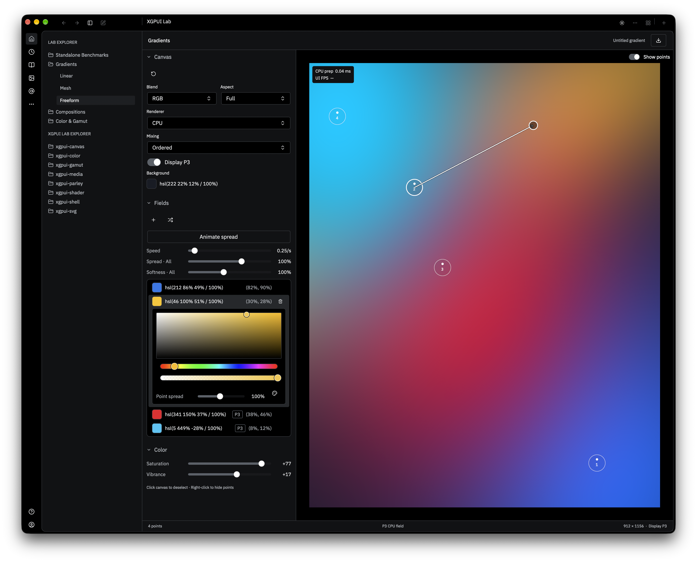
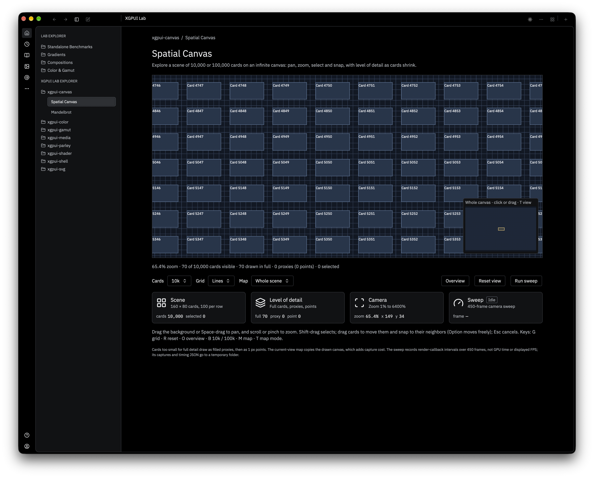
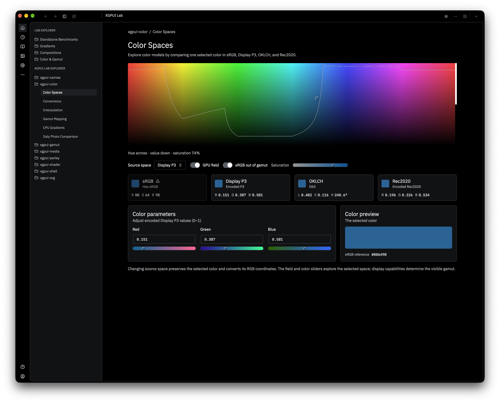
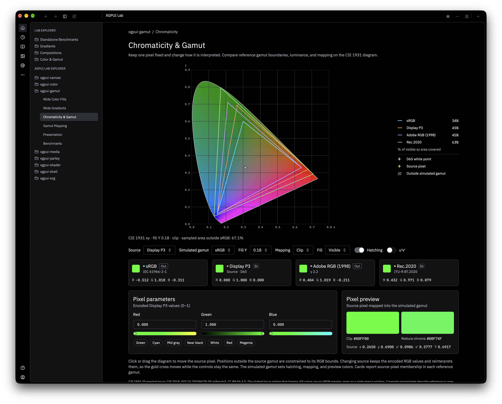
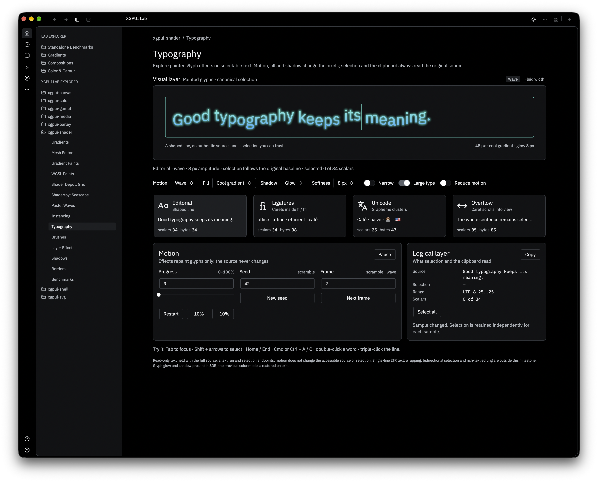
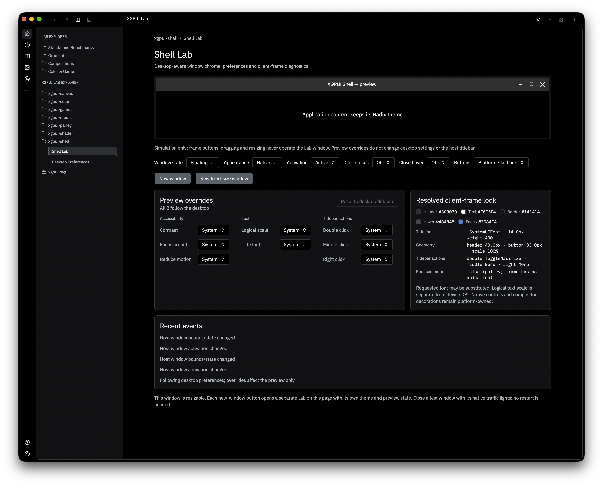
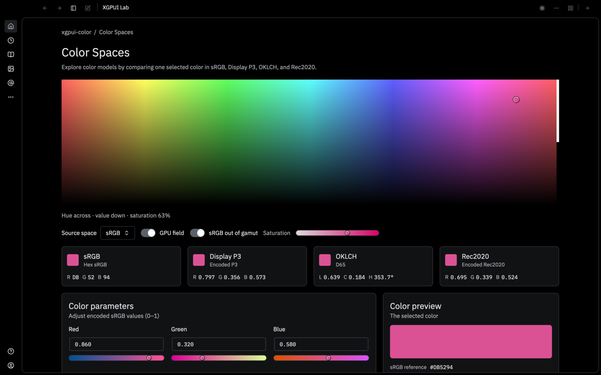

XGPUI Lab
A desktop app for testing the xgpui extension crates, with demos, diagnostics and benchmarks, built from Luma controls.






What it does
XGPUI Lab is one window with a sidebar explorer. Each page tests one feature of an xgpui extension crate on the real GPU path. The page's breadcrumb names the crate it tests. The chrome is a look-radix Look, so the Lab also exercises the Luma SDK controls it is built from.
| Explorer section | What it covers |
|---|---|
| Gradients, Compositions, Color & Gamut | Luma color controls: gradient, mesh and freeform builders, pickers, wheels, harmonies and color stops. |
xgpui-color | Color spaces, conversions, interpolation, gamut mapping, CPU gradients and a photo comparison. |
xgpui-gamut | Wide-gamut fills and gradients, chromaticity diagrams, gamut mapping and presentation (Display P3). |
xgpui-media | Images, textures and mipmaps, image filters, float and P3 surfaces, tiled canvas, photo viewer, video frames and resource limits. |
xgpui-parley | Text shaping, line layout, paragraphs, a text field, font fallback, rasterization and scrolling. |
xgpui-shader | Gradient and WGSL paints, mesh editor, Shadertoy and Shader Depot samples, instancing, typography, brushes, layer effects, shadows and borders. |
xgpui-svg, xgpui-canvas | SVG rendering, scaling, path effects and caching; a spatial canvas and Mandelbrot. |
xgpui-shell | Client-frame window chrome and the desktop preferences the shell reads. |
| Benchmarks | Each crate's section ends with a Benchmarks page. Standalone benchmarks run in a separate worker process. |
Run xgpui-lab --list-pages for the full, current list. Screens built with LabScreen follow the Lab Screen Design specification.
01Run it
cargo run -p xgpui-labWith no options, the Lab opens on the Gradients page in dark mode, at 1700×1350.
The options below are copied from apps/xgpui-lab/docs/launching.md and src/launch.rs by hand, so this page can fall behind. When they disagree, xgpui-lab --list-pages, the code and that file are correct.
02Start on a page
When you are working on one page, start the Lab on it. The page opens exactly as if you had clicked it: its section is expanded and the page is selected in the sidebar.
cargo run -p xgpui-lab -- --open "xgpui-media/Image Filters"
cargo run -p xgpui-lab -- --open Typography --theme light --size 1280x900
cargo run -p xgpui-lab -- --open "Shell Lab" --hide-nav
cargo run -p xgpui-lab -- --list-pages| Option | Effect |
|---|---|
--open PAGE | Starts on PAGE: section/page as --list-pages prints it, or the page name alone when it is unique. Matching ignores case. A name used in two sections, such as Gamut Mapping, is an error that lists both full names. |
--theme light|dark | Starts in that theme. |
--size WIDTHxHEIGHT | Window size in logical pixels; at least 720x480. Default 1700x1350. |
--hide-nav | Starts with the navigation panel closed. The titlebar's sidebar button reopens it at its normal width. |
--list-pages | Prints every page as section/page and exits. |
03Capture a page
--capture opens the normal Lab window on the page, waits for it to settle, saves the window's rendered frame as a PNG and quits. The image is exactly what you would see, titlebar and sidebar included, at the display's scale (2× on Retina).
cargo run -p xgpui-lab -- --open "Color Spaces" --size 1440x900 --capture /tmp/color-spaces.png| Option | Effect |
|---|---|
--capture PNG | Saves the window after it settles, then quits. Requires --open. |
--settle MS | How long to wait before the capture, in milliseconds. Default 3000. |

Above: --open "Color Spaces" --hide-nav.
04Regression snapshots
apps/xgpui-lab/scripts/lab_snapshots.py builds the Lab once, captures pages in dark and light, and compares two runs. Take one set before a change and one after.
python3 apps/xgpui-lab/scripts/lab_snapshots.py capture target/lab-snapshots/before
# change code
python3 apps/xgpui-lab/scripts/lab_snapshots.py capture target/lab-snapshots/after
python3 apps/xgpui-lab/scripts/lab_snapshots.py compare target/lab-snapshots/before target/lab-snapshots/after- capture takes the
LabScreenpages by default. Use--page(repeatable),--theme,--size,--settleand--hide-navto change what it takes. - compare prints
same,CHANGEDorMISSINGfor each snapshot and exits non-zero when anything differs, so it can gate a check. With ImageMagick installed it also counts the differing pixels and writes highlighted diffs toafter/diff/. - Captures are deterministic: two runs with no code change produce byte-identical PNGs, so a
CHANGEDresult is a real change.
Compare like with like. Use the same size, theme and --hide-nav setting for both runs. Animated pages (waves, video, sweeps) differ from run to run; leave them out. Each capture opens a real window.
Other modes
| Option | Effect |
|---|---|
--text-system=parley | Runs the whole Lab on the Parley text system, which the Parley Text Field page needs. |
--media-benchmark, --gamut-benchmark, --parley-benchmark, --shader-benchmark, --svg-benchmark | Run a crate's benchmark suite from the command line, then exit. |
Where things live
Paths are relative to apps/xgpui-lab/.
| Path | Contents |
|---|---|
src/app.rs | The explorer: sections, pages and routes. |
src/launch.rs | Launch options and --capture. |
src/screen/ | LabScreen and its parts: hero, cards, panels, text roles, metrics. |
src/theme.rs | The Lab's look-radix Look and the bundled IBM Plex Mono. |
scripts/lab_snapshots.py | Snapshot capture and compare. |
docs/ | Design document, LabScreen API notes and mockups. |